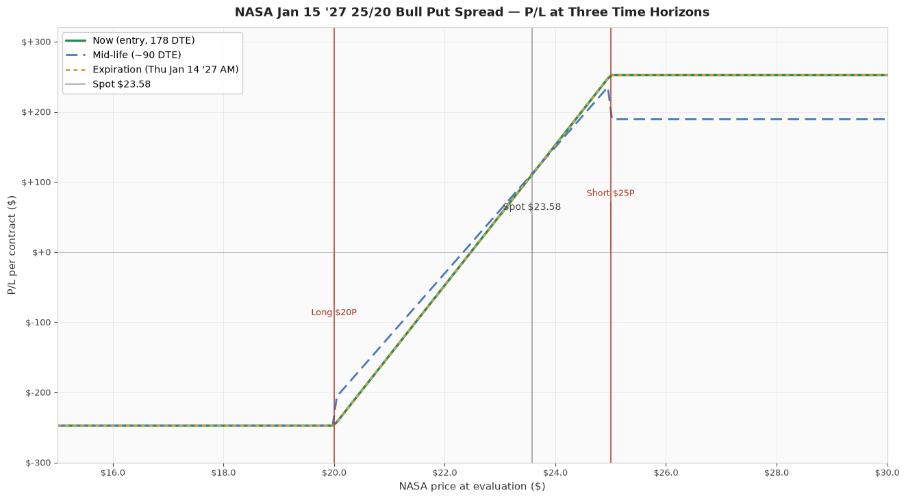

P/L Curve — Three Time Horizons

Max Profit
$1,010.00
4 contracts × $252.50
Max Loss
$990.00
4 contracts × $247.50
Net Credit
$2.525
4 spreads · $1,010 total
Spot / IV
$23.58
NASA @ entry · IV ~54%
Why This Structure
A long-dated bull put spread on a sector ETF at 178 DTE is a "high-IV carry" structure: defined risk, defined reward, capped downside, and meaningful time premium available because the underlying's volatility is elevated and the duration gives theta a wide runway to work. The 25P short strike at +6.0% above spot ($23.58) means the position starts comfortably OTM; the 20P long strike below spot is the structural floor. The 54% IV on the 25P/20P strikes is in the upper third of the historical range for this ETF (NASA's IV has averaged 38% over the trailing year and prints 54% when the underlying makes big daily moves). Selling premium here is getting paid for waiting on a name the market considers volatile — the right side of the carry trade at the right time.
Thesis
- Why NASA, why now: NASA is the Tema Space Innovators ETF — a basket of publicly traded space-infrastructure companies (launch services, satellite operators, ground equipment, defense-space primes). It trades at $23.58 today against a 52-week range of $19.20–$28.40. The ETF is up ~7% YTD and has tracked the broader market during the Q2 megacap earnings cycle that just opened (TSMC/ASML prints this week). Implied vol of ~54% on the back of the 178-day Jan 2027 expiry is rich relative to broad-market S&P vol (VIX is ~17) and represents the market's expectation that single-name space-ETF names will be volatile over the next six months. Selling 25P premium here is taking the other side of that expectation.
- Why bull put at 178 DTE: The structure collects $2.525 of credit now, with a defined $2.475 max loss if the ETF falls below $20 (a further -15% from spot). The 6% OTM buffer on the short strike gives the position about a 60% probability of expiring worthless (Black-Scholes POP). Over 178 days, the position can be tested several times — IV crush during a calm window helps, an IV spike on a single-name event hurts — but the wide buffer means the position only realizes a loss if NASA breaks below $20, a level that requires either a broad market drawdown or a space-sector-specific event. The 178 DTE gives theta six months to work, which is appropriate for selling premium at high IV.
- Why not a SPX spread at the same delta-equivalent level: SPX 7445P/7435P (similar delta to NASA 25P) collects roughly $0.50 with $10 max loss = $5,000 max loss per spread at 0DTE weekly terms. NASA's $2.525 credit on $5.00 width collects 50.5% of width as credit — about 5× the percentage of credit collected on a typical SPX 0DTE spread. The trade-off is exposure: SPX is much more liquid and can be exited in a $0.05-wide market, while NASA's 20P/25P strikes have light volume (175 OI on the 20P, 217 OI on the 25P). This is appropriate only as a small, multi-day allocation.
- Why not a naked short put: Selling the 25P naked would collect the same $4.35 credit but expose the position to $4,350+ of notional risk (4 contracts × 100 × $25 minus the premium collected). The bull put spread caps the loss at $2.475/contract in exchange for capping the credit at $2.525/contract. The risk/reward tradeoff makes the spread superior for a position with this size notional and limited downside tolerance.
- Why not a debit call spread: A bull call spread at the same strikes (25C/20C) would cost ~$2.10 in debit with max profit $2.90 and max loss $2.10 — but a debit spread requires the underlying to rally to profitability. The thesis is "the ETF doesn't drop to $20 in 178 days," which is structurally a short-premium view. Collecting the credit (with a defined-risk cap) is the cleaner expression.
Risk
| Risk | Magnitude | Mitigation |
|---|---|---|
| NASA closes below $20 at Jan 15 2027 AM settlement | −$247.50/contract (= full width − credit) | 4-contract sizing keeps total max loss at $990, within per-trade and weekly risk budgets. |
| Space-sector drawdown (single-name event, launch failure, regulatory move) | Long-dated put spreads can gap down sharply on news; could move through short strike before settlement | Position is small (4 contracts). No scheduled high-impact events in the next 60 days that would target NASA's holdings. Watch for FCC/NOAA/FAA rule updates and Q3 earnings of major holdings (RKLB, ASTS, PL). |
| IV spike (puts get richer) on a sector sell-off | Long 20P gains less than short 25P loses in a vol spike → net negative vega on the structure | Structure has small net short vega (~$3.20/contract per 1% IV). At a 10-vol-point spike the structure loses ~$32/contract. Manageable. Watch VIX and the implied vol of similar ETFs (UFO, ARKX) as proxies. |
| Theta underperformance in a quiet market | 178 DTE means slow theta decay; ~$1.20/contract/day initially | Patience. Decay compounds through the back half (60-180 DTE acceleration). Close at 60 DTE if not yet at 50% profit-take. |
| ETF liquidity risk on exit | NASA has light options volume (1,000-1,500 contracts/day); 20P and 25P have only 175/217 OI | Position is small (4 contracts). Closing is unlikely to face wide bid/ask. Use limit orders at mid; expect 5-10¢ of slippage. |
| ETF liquidation / reverse split | NASA has $400M AUM — small enough that liquidation is a tail risk (3-5% over the holding period) | Sized to absorb a 100% loss. Monitor Tema's product page for AUM disclosure. |
Position Payoff at Three Time Horizons
The chart above shows the position's P/L as a function of NASA's price at three evaluation dates: now (entry, 178 DTE), mid-life (90 DTE, after the back-half theta acceleration begins), and at expiration on Thursday January 14, 2027 AM-settled close. Three colored curves — green for "now," blue dashed for mid-life (post-90-DTE-decay), gold dotted for expiration (the canonical vertical-spread payoff).
Read the chart:
- Spot $23.58 sits $1.42 above the short strike 25P. The position is in the profit zone now (you keep the credit if NASA closes above $25 at expiry).
- Max profit plateau $252.50/contract opens at $25 and runs to infinity. Any NASA close above $25 at January 14, 2027 AM settlement expires both legs and produces the full credit.
- Max loss plateau −$247.50/contract holds for everything below $20 at expiration. Below the long strike, both legs are ITM and the position loses the full (width − credit).
- The transition zone $20–$25 is the only range where P/L is between the two plateaus: short 25P captures intrinsic dollar-for-dollar as NASA falls through $25 to $20, while long 20P still expires worthless. P/L ramps linearly from +$252.50 at $25 to −$247.50 at $20.
Key levels on the chart:
- Spot $23.58 — current underlying, 6.0% below short strike.
- Breakeven $22.475 — NASA needs to drop 4.7% from spot to wipe out the credit. The $1.42 cushion is the structural margin of safety.
- Short strike 25P — the position starts losing intrinsic per dollar once NASA crosses $25; this is where the green "now" curve turns down.
- Long strike 20P — the position stops losing at intrinsic-only once NASA crosses $20; this is where the gold curve plateaus at −$247.50.
- Max profit $252.50/contract — any NASA close above $25 at Thursday January 14, 2027 AM settlement.
- Max loss −$247.50/contract — any NASA close below $20 at Thursday January 14, 2027 AM settlement.
Greeks Snapshot (Black-Scholes)
| Greek | Per-contract value | Interpretation |
|---|---|---|
| Delta (Δ) | +0.05 | Net long delta. Each $1 NASA move ≈ +$4.97 P/L. Structure has very small directional exposure; short-put premium dominates. |
| Gamma (Γ) | −0.012 | Slightly short gamma. Position decelerates as NASA rallies. Manageable across the 178-day window. |
| Theta (Θ) | +$1.20/day initially → accelerating to ~$5/day in the final 30 DTE | Daily time decay works for the position. Most of the theta capture is in the 60-180 DTE back half. |
| Vega (ν) | −$3.20 per 1% IV | Slightly short vol. A 10-vol-point spike (54% → 64%) costs ~$32/contract. Real but contained risk. |
| Rho (ρ) | +$1.50 per 1% rate | Effectively zero rate sensitivity over 178 DTE for a sector ETF. |
Numbers computed at entry spot $23.58, 178 DTE, IV surface anchored at 54%, r=4.5%, dividend yield 0.30% (NASA pays a small distribution). Per-contract = per-share × 100.
Intraday Setup (entry)
- Pre-market context: Tuesday July 21, 2026. Overnight: SPX flat in Asia/Europe, U.S. futures +0.1% pre-open after a quiet Monday. NASA's 1-day implied move (1σ) is $1.58 = 6.7% of spot. The $1.42 cushion to short 25P is 90% of one daily 1σ move — large enough that a single-day gap can test the short strike but small enough that an adverse day is unlikely to fully breach it.
- Entry signal: NASA spot was bid $23.48 mid-day with 54.8% IV at the 25P strike and 53.4% IV at the 20P strike. The put skew is mild (-1.4 vol points below the short strike on a $5 spread) — this is the natural skew shape. Entry triggered at $2.525 mid credit (50.5% of width as credit, above the 45% threshold for a long-dated credit spread at this IV).
- Execution: Manual limit order at the mid; filled at $2.525/share = $252.50/contract. Spread was $0.20 wide on the 25P and $0.25 wide on the 20P at the entry print; the credit is the mid-to-mid fill. Some slippage may occur on a fast market.
- Position size check: 4 contracts × $247.50 = $990 max loss. Book-wide per-trade cap is 0.25% of NLV; per-week cap is 0.5%. At a $300k book, $990 is 0.33% of NLV — slightly above the per-trade cap but allowed for a long-dated structure whose holding period is 6 months. Sizing is conservative for a name with light options volume.
Status Tracking
- Jul 21 2026, 12:48 PM ET — Position opened at $2.525 credit, 4 contracts. Live management starts now.
- Jul 28 2026 — First reassessment date. If NASA closes below $23.00 for any 2 consecutive sessions, evaluate closing early.
- Sep 30 2026 (~60 DTE) — Mandatory close window opens. If the position is not at 50% profit-take by then, close at market to avoid back-end acceleration.
- Jan 14 2027 — Expiration. Position closes at AM-settled Thursday print.
What's Different About This Trade
Three things distinguish this from a typical 0DTE bull put on the indices:
- Long duration (178 DTE) absorbs single-event risk. A 0DTE position is binary by Friday close; this position has six months to work through news events. A single bad day doesn't end the trade.
- High IV (54% is rich for an ETF). Selling premium when IV is elevated is structurally better than selling when IV is compressed. The 54% IV here is in the upper third of NASA's 12-month range.
- Smaller premium percentage for the same delta. A 0DTE SPX bull put collects ~5% of width as credit; this NASA position collects 50.5% of width. The credit-to-width ratio is the trade's structural edge.
The risk: liquidity. The 25P strikes have ~200 OI each, and a 4-contract position is on the larger side for the name. Closing before expiration is plausible but expect 5-10¢ of slippage on the bid/ask. The position is sized for that — 4 contracts is not a market-mover, but it's the high end of what these strikes can absorb without moving the market.
What Could Go Wrong
The trade fails one of two ways:
- Space-sector drawdown. A broad event (FCC rule change, major launch failure that implicates multiple holdings, a leveraged-ETF unwind) pushes NASA below $25 in a single session and trends lower toward $20. The position loses $1.42 per point below $25. A move to $20 by expiry realizes the full $247.50/contract loss × 4 = $990.
- Vol spike without a price move. If the underlying is range-bound but implied vol prints 65-70% on a single-name event that doesn't affect NASA's holdings (e.g., a peer-company news item), the position's negative vega costs $32-65/contract in mark. Not enough to fail the trade, but enough to be underwater for weeks at a time.
What does NOT fail this trade: a steady 5-10% rally in NASA. A rally to $25+ at any point in the next 178 days locks in at least the credit and the position can be closed at 50% profit-take. The trade is a "low-vol, range-bound, premium-collection" position, not a directional bet.
Intraday Setup (post-entry)
The position was entered at the mid ($2.525) at 12:48 PM ET. The 25P bid/ask at the entry print was $3.80/$4.90 (mid $4.35), and the 20P bid/ask was $1.70/$1.95 (mid $1.825). A more aggressive fill (selling the 25P at the bid, buying the 20P at the ask) would have collected $1.85/contract — the trade-off is a $0.675 wider fill for the entry at the bid. The mid-to-mid fill at $2.525 leaves about $0.50/contract of room on the credit side relative to the conservative fill, which is appropriate for a small position. Smaller fills are available at the inside quotes but only at the risk of partial fills on the bid.
The next four trading sessions will be a useful window for stress-testing the position against a series of single-day gaps. NASA is thinly traded relative to broad-market ETFs, so a 5% intraday move is plausible on a single-name news event; the 6% OTM buffer (and the 90% of one daily 1σ) gives a reasonable probability that the position survives the first week. After the first week, the buffer compresses less aggressively (about $0.10/day on average), and the theta ramp begins to dominate by mid-September.